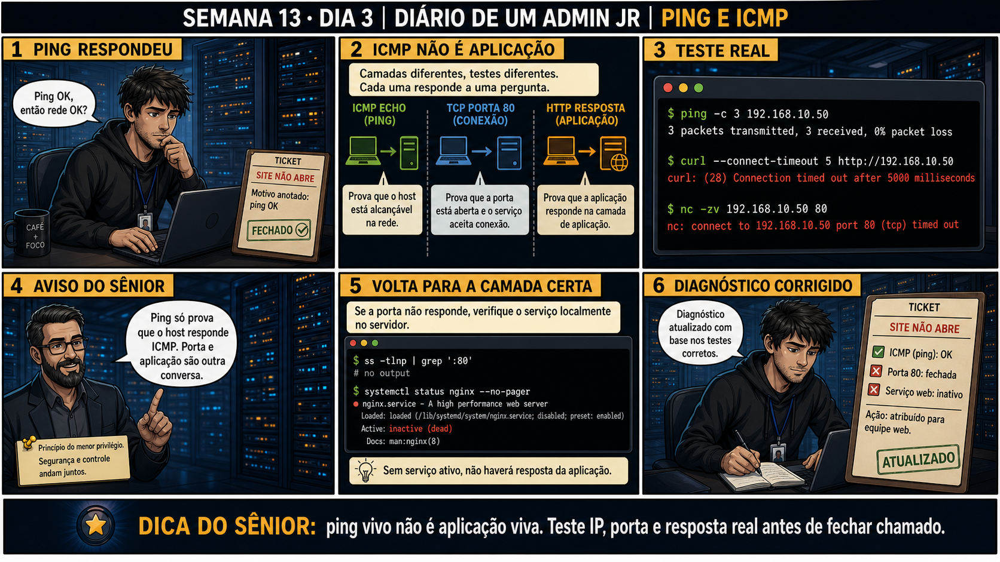

DIARIO DE UM ADMIN JR. | FASE 2 — REDES, DO IP AO DIAGNÓSTICO
🧠 Antes de começar — 20 segundos de memória (Dia 2)
1. Ontem dois servidores pareciam "parecidos" pelos primeiros números do IP. Sem olhar: o que realmente decide se dois IPs estão na mesma rede? 2. Hoje o ping entra em cena. Ele testa a mesma coisa que o cálculo de rede de ontem, ou outra coisa?
1. A operação AND entre o IP e a máscara (CIDR) — o resultado, o endereço de rede, é o que precisa ser igual nos dois lados. Números parecidos no início não garantem nada. 2. Outra coisa, mais restrita: o ping confirma só que o host RESPONDE a ICMP — ele nem confirma que a rede está certa (rotas e firewall também entram na jogada), nem diz nada sobre porta ou aplicação. Hoje a lição é não parar a investigação assim que o ping funcionar.
🔗 Conecta com o Dia 1: Você já sabe que ping testa a camada de rede (ICMP). Hoje
o erro clássico aparece: "ping OK, então rede OK?" Não — ping prova só que o host responde, nada sobre porta
ou aplicação. Fechar um chamado só com ping é o mesmo erro do reboot às cegas, agora em rede.
🔓 Privilégio de hoje: testar cada camada com a ferramenta certa, não só ping.
Você ganha a sequência completa — ICMP (ping) prova host, porta TCP (nc) prova conexão, resposta HTTP (curl)
prova aplicação — e a disciplina de nunca fechar um chamado sem testar as três.
Semana 13 · Dia 3 | Nível Júnior — Redes
Ping e ICMP
ping vivo não é aplicação viva — teste IP, porta e resposta real antes de fechar chamado
ANTES DE ALTERAR, OBSERVE. DEPOIS DE ALTERAR, VALIDE.

1. O chamado
#5960PRIORIDADE ALTA15:20aberto por: suporte N1
host: srv-app-05 · serviço: site institucional
"Site não abre."
Você roda ping, recebe resposta, e já quer marcar "motivo anotado: ping OK". Isso fecha o caso?
💡 Passa o mouse nas palavras destacadas pra ver uma dica rápida — clica se quiser a explicação completa com analogia.
2. O sênior te conta
Semana passada, outro ticket
Um colega fechou um chamado de "site fora do ar" com a nota "testei, ping responde, rede OK" — e escalou
de volta pro time de aplicação. Três horas depois o chamado voltou: o site continuava fora do ar. Eu
rodei nc -zv na porta 80 e recebi timeout, mesmo com ping respondendo perfeitamente. Fui
direto no servidor: ss -tlnp | grep ':80' não retornou nada, e systemctl status
nginx mostrava inactive (dead). O nginx tinha caído num crash silencioso horas antes.
Ping nunca testou isso — ICMP e HTTP são protocolos completamente diferentes, em camadas diferentes.
O ponto que fica: "ping OK" fechar um chamado é a mesma armadilha de "interface UP" significar rede
funcionando. Cada teste prova só a camada que ele testa — nunca as de cima. Três testes, três camadas,
sempre.
3. Decodificador de conceitos
Clica em qualquer termo pra ver a definição completa e uma analogia do dia a dia:
4. Ferramentas e leitura da evidência
Teste
Comando
O que prova
ICMP Echo
ping -c 3 host
Host alcançável na rede (camada de rede).
TCP Porta
nc -zv host porta
Porta aberta e aceitando conexão (camada de transporte).
HTTP Resposta
curl --connect-timeout 5 http://host
Aplicação respondendo de verdade (camada de aplicação).
$ ping -c 3 192.168.10.50
3 packets transmitted, 3 received, 0% packet loss
$ curl --connect-timeout 5 http://192.168.10.50
curl: (28) Connection timed out after 5000 milliseconds
$ nc -zv 192.168.10.50 80
nc: connect to 192.168.10.50 port 80 (tcp) timed out
--- investigando localmente no servidor ---
$ ss -tlnp | grep ':80'
# (sem saída)
$ systemctl status nginx --no-pager
● nginx.service - A high performance web server
Active: inactive (dead)
5. Laboratório guiado — marca conforme for testando
Segurança: execute os testes apenas em VM descartável e confirme nomes de discos, hosts e arquivos antes de cada comando.
Ação: confirme a camada de rede com ping.
$ ping -c 3 127.0.0.1
Resultado esperado: 3 pacotes transmitidos, 3 recebidos, 0% de perda.
Por quê: confirma só que o host responde — ainda não diz nada sobre porta ou aplicação.
Cilada comum: tratar ping bem-sucedido como "rede está tudo ok" e fechar o chamado aqui.
Ação: pare um serviço web (se houver) e teste a porta específica.
$ systemctl stop nginx
$ nc -zv 127.0.0.1 80
🔍 Detalhar esse comando
systemctl stop nginx
Para o serviço nginx de propósito, reproduzindo o cenário em que a aplicação está fora do ar (mas a rede continua saudável).
nc
Netcat — ferramenta de rede genérica usada aqui só pra testar se uma porta TCP aceita conexão, sem precisar de um cliente HTTP completo.
-z
Modo zero-I/O: só testa se a conexão abre, sem enviar ou receber dados — ideal pra checagem rápida de porta.
-v
Modo verboso: mostra na tela se a conexão teve sucesso, foi recusada ou expirou, em vez de ficar silencioso.
Resultado esperado: connection refused ou timed out, dependendo do estado do firewall.
Por quê: nc testa especificamente a camada de transporte — a porta aceita conexão ou não, independente do host responder a ping.
Cilada comum: confundir "connection refused" (host respondeu, ninguém escutando) com "timeout" (sem resposta nenhuma, possível firewall) — são causas diferentes.
Se o seu resultado foi diferente
"nc: command not found" → instale com sudo apt install netcat-openbsd (Debian/Ubuntu) ou use curl --connect-timeout 3 telnet://127.0.0.1:80 como alternativa. "Unit nginx.service not loaded" → o nginx não está instalado nessa VM. Instale com sudo apt install nginx ou adapte o exercício pro serviço web que você tiver disponível.
Ação: investigue localmente no servidor e compare com o resultado do nc.
$ ss -tlnp | grep ':80'
$ systemctl status nginx --no-pager
Resultado esperado: nenhuma linha de saída em ss, serviço inactive em systemctl.
Por quê: a investigação local confirma a causa exata (serviço parado) em vez de deixar a suspeita solta entre porta/firewall/aplicação.
Cilada comum: pular direto pra reiniciar o serviço sem checar os logs antes — você perde a chance de descobrir por que ele caiu.
🧑🏫 Aqui entra o Mentor (em breve): se nc mostrar connection refused mas ss mostrar o serviço escutando, este é o ponto onde o chat com o Sênior-IA vai ajudar a investigar firewall como possível causa.
Ação: reinicie o serviço web e repita os três testes em sequência.
Por quê: repetir os três testes depois da correção é o que confirma que TODAS as camadas voltaram, não só a que você mexeu.
Cilada comum: testar só a camada que você corrigiu e assumir que as outras continuam boas — sempre revalide as três.
Ação: documente os três resultados lado a lado.
# ICMP (ping): OK
# TCP (nc -zv porta 80): OK
# HTTP (curl): OK — HTML recebido
Resultado esperado: checklist com ICMP, porta e aplicação, todos confirmados — reproduzindo o painel 6 da prancha de hoje.
Por quê: esse checklist de três linhas é o que evita fechar o próximo chamado com base só num ping.
Cilada comum: anotar só "resolvido" sem registrar qual camada tinha falhado — a causa raiz se perde e o padrão não é reconhecido da próxima vez.
6. Antes de ver as opções — tenta responder
🧠 Recall ativo: quais são as três camadas que ping, teste de porta e teste de aplicação confirmam,
respectivamente?
ICMP (ping)
prova que o host está alcançável (camada de rede). Um teste de conexão
TCP na porta
(com nc) prova que o serviço aceita conexão (camada de transporte). Uma resposta real de
HTTP
(com curl) prova que a aplicação de fato responde (camada de aplicação). Três camadas, três testes
diferentes.
QUESTÃO 1 de 3
7. Questão comentada — clica numa alternativa
ping 192.168.10.50 responde normalmente, mas o site continua fora do ar. Qual é
a explicação mais precisa e o próximo passo correto?
💡 Analogia do Sênior para Fixar: O PING (ICMP Echo Request/Reply) é como o sonar do submarino: emite um pulso sonoro e mede quantos milissegundos o eco demora para bater no alvo e voltar.
QUESTÃO 2 de 3 — cenário de erro real
7.1 ss -tlnp | grep ':80' não retornou nada, e systemctl status nginx mostra inactive (dead)
Agora você tem evidência concreta, não só suposição.
Com essa evidência, qual é a conclusão correta sobre a causa do site fora do ar?
💡 Analogia do Sênior para Fixar: A mensagem 'Destination Host Unreachable' é o carteiro devolvendo a carta dizendo que a rua existe, mas aquela casa específica não foi encontrada.
QUESTÃO 3 de 3 — detalhe que confunde todo iniciante
7.2 "Se ping falha, isso sempre significa que o host está desligado?"
Um colega, vendo ping falhar, já assume que o servidor caiu completamente.
Por que essa suposição pode estar errada?
💡 Analogia do Sênior para Fixar: Bloquear PING em firewalls não esconde o servidor de ataques reais: scanners avançados testam portas TCP abertas direto, ignorando se o ICMP responde ou não.
8. Procedimento profissional
Nunca feche um chamado de rede só com base num ping bem-sucedido.
Teste a porta específica com nc -zv, confirmando a camada de transporte.
Teste a resposta real da aplicação com curl (ou similar), confirmando a camada de aplicação.
Se algo falhar, investigue localmente no servidor com ss -tlnp e systemctl status.
Documente qual camada exatamente falhou, com evidência de cada teste.
Prevenção
Padronize o checklist de três testes (ICMP → TCP → HTTP) como critério mínimo pra fechar
qualquer chamado de "site/serviço fora do ar" — nunca aceite "ping OK" como diagnóstico completo, seu ou de
outro técnico.
9. Validação e encerramento
ping foi tratado como confirmação de host, não de aplicação.
nc -zv (ou equivalente) testou a porta especificamente.
curl (ou equivalente) confirmou resposta real da aplicação.
Quando algo falhou, a investigação local (ss, systemctl) confirmou a causa exata.
Rollback e limites
Todos os comandos de hoje (ping, nc, curl, ss, systemctl status) são de leitura —
não existe rollback necessário. O cuidado real é resistir à tentação de fechar um chamado só com um teste
parcial, quando três camadas diferentes ainda não foram confirmadas.
💡 Sobre repetição espaçada: "um teste parcial não é validação completa"
conecta com a Semana 10 (healthcheck cobrindo múltiplos aspectos, não só um) — mesma disciplina aplicada à
rede. O Anki vai conectar os dois.
10. Resposta final
Alternativa correta: A. Nesta aula, a explicação certa foi ping só
prova alcançabilidade via ICMP — o próximo passo correto é testar porta e aplicação separadamente. O
ponto central do caso é este: ping vivo não é aplicação viva — teste IP, porta e resposta real antes de
fechar chamado.
🔓 O que você desbloqueou hoje
Capacidade de testar as três camadas relevantes (rede, transporte, aplicação)
antes de declarar um problema resolvido ou de outra causa. Amanhã você aprofunda a camada de transporte: o
que é exatamente um socket, e a diferença entre "connection refused" e "timeout" — dois erros que parecem
iguais, mas contam histórias completamente diferentes.